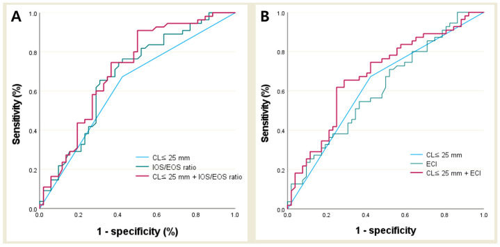
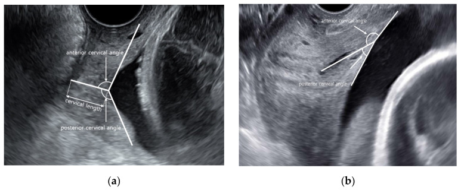
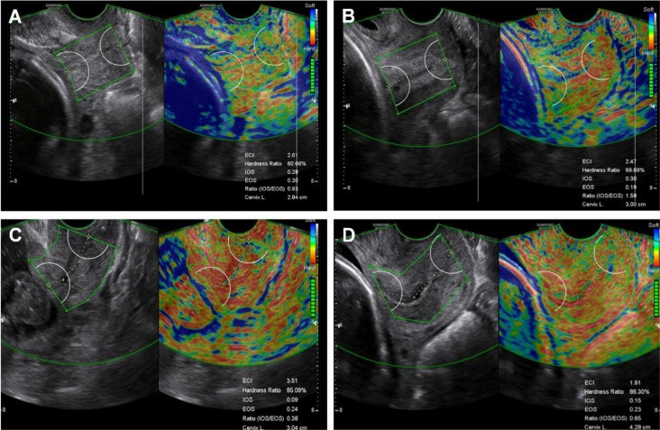
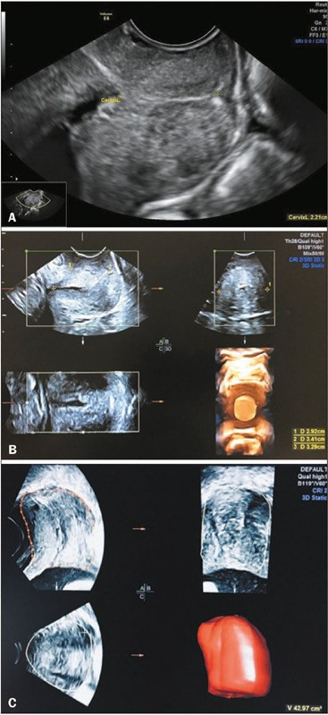

579 — Dự báo sinh non bằng cấu trúc cổ tử cung: góc tử cung–cổ tử cung, elastography & thể tích 3D / Structural prediction of preterm birth: uterocervical angle, cervical elastography and 3D volume
Tags: pattern:co-tu-cung-ngan pattern:sinh-non pattern:remodeling-co-tu-cung vung:co-tu-cung score:CL-25mm score:UCA protocol:TVUS-co-tu-cung protocol:elastography-co-tu-cung protocol:3D-VOCAL
Mức chắc chắn (certainty): tổng hợp y văn (literature synthesis) — tổng hợp từ 1 phân tích mạng (network meta-analysis) 2026, 2 phân tích gộp 2023–2025, các đoàn hệ tiến cứu về elastography và thể tích 3D; có phản biện vì kết quả giữa các nghiên cứu không đồng thuận. Không có ca nguyên văn riêng của nhóm.
1. Tổng quan bệnh học – cơ chế hình ảnh
Sinh non tự phát (spontaneous preterm birth — sPTB): sinh trước 37 tuần 0 ngày; là nguyên nhân hàng đầu gây tử vong trẻ dưới 5 tuổi. Cổ tử cung không phải "ống thụ động": nó tái cấu trúc (remodeling) liên tục — giảm tỷ lệ collagen type I/III, tăng glycosaminoglycan (hyaluronan) và nước, tăng tế bào viêm, giảm cơ trơn → mềm dần (softening) rồi mới ngắn lại (shortening) và mở (dilation).
Vì sao hình ảnh học phải vượt khỏi "đo chiều dài": chiều dài cổ tử cung (cervical length — CL) chỉ là một chiều của một mô đã biến đổi muộn.
- CL ≤ 25 mm ở 16–24 tuần là ngưỡng kinh điển, nhưng độ nhạy chỉ ~46% cho sPTB (phân tích gộp 15 đoàn hệ, 6.218 thai) — đa số ca sinh non không có cổ tử cung ngắn.
- Ngược lại, nhiều thai phụ cổ tử cung ngắn vẫn sinh đủ tháng → giá trị tiên đoán dương thấp khi dùng CL đơn thuần.
Ba trục thay thế/bổ sung — giải thích TẠI SAO:
Trục 1 — Góc tử cung–cổ tử cung (uterocervical angle — UCA): đo góc tại lỗ trong, giữa trục ống cổ tử cung và thành trước đoạn dưới tử cung (vẽ dài 3 cm). Góc càng tù → vector trọng lượng thai/ối truyền gần vuông góc lên lỗ trong thay vì dọc theo trục cổ → lỗ trong chịu lực cắt lớn hơn → funneling và mở sớm. Đây là cơ học "cột chống bị nghiêng", không phải viêm.
Trục 2 — Elastography (siêu âm đàn hồi): strain đo biến dạng tương đối khi nén (không đơn vị); shear-wave (SWE) đo tốc độ lan truyền sóng cắt → độ cứng tuyệt đối (kPa hoặc m/s). Mô mềm do nước + collagen thoái hóa biến dạng nhiều hơn (strain cao) và truyền sóng cắt chậm hơn (stiffness thấp) → bắt được softening trước shortening.
Trục 3 — Thể tích 3D (VOCAL): thể tích cổ tử cung (cm³) = tích phân diện tích lát cắt dọc theo ống. Phân biệt "ngắn nhưng dày" (thể tích còn tốt) với "ngắn và mỏng" (mất chất đệm) — thông tin mà CL 2D bỏ qua.
Ngưỡng định lượng bắt buộc nhớ:
- CL ≤ 25 mm trước 24 tuần = "cổ tử cung ngắn"; ≤ 20 mm = ngưỡng lợi ích progesterone âm đạo; ≤ 10 mm + funneling/sludge = nguy cơ rất cao.
- UCA: phân tích gộp 15 đoàn hệ (6.218 thai) — UCA ở nhóm sPTB lớn hơn 13,76° (95% CI 10,61–16,91); Se 70% / Sp 67% / AUC 0,77 cho UCA so với Se 46% / Sp 90% / AUC 0,82 cho CL → UCA một mình KHÔNG vượt CL.
- Nghiên cứu 274 thai (Trung Quốc): ngưỡng UCA 96° cho sinh < 37 tuần và 106° cho sinh < 34 tuần; UCA > 105° có tỷ lệ sinh < 34 tuần cao nhất; 95–105° có tỷ lệ sinh 35–37 tuần cao nhất; kết hợp UCA + CL cho Se 87,6% / Sp 80,6% (< 37 tuần) và Se 71,7% / Sp 86,4% (< 34 tuần).
- Elastography: phân tích gộp 13 nghiên cứu (4.087 thai phụ) — Se 77,1% / Sp 73,3% / AUC 0,82 / DOR 11,05.
- Đoàn hệ strain 275 thai (sPTB 13,5%): IOS cho AUC 0,797; mô hình CL + IOS/EOS cho AUC 0,828, Se 73%, Sp 82% — vượt CL đơn thuần có ý nghĩa (DeLong).
- SWE 100 thai nguy cơ thấp: mô hình CL + IOS + ECI cho AUC 0,889 so với CL 0,709 (p = 0,01); IOS (aOR 1,10) và ECI (aOR 1,28) là yếu tố độc lập.
- Thể tích 3D: 2D (công thức hình học) cho 27,71 ± 9,27 cm³, 3D VOCAL cho 35,21 ± 8,85 cm³ ở 20–24 tuần — hai phương pháp KHÔNG thay thế nhau; 3D có ICC liên quan sát viên tốt hơn (thể tích cổ tử cung ICC 0,78; tỷ lệ thể tích sẹo/cổ tử cung ICC 0,94).
- Tầm soát CL toàn dân: 2 RCT (1.634 thai) không giảm sinh non có ý nghĩa; 4 đoàn hệ (425.735 thai) có giảm — chất lượng bằng chứng rất thấp (GRADE), chưa đủ khuyến cáo toàn cầu.
2. Mẫu hình + chẩn đoán phân biệt theo vị trí (Gamut)
- Năm mẫu hình cần phân biệt (vì xử trí khác nhau):
- Ngắn đơn thuần (short cervix): CL ≤ 25 mm, không phễu, không triệu chứng.
- Ngắn + phễu/sludge (funneling / amniotic sludge): màng ối lồi vào ống cổ, sludge = đám echo dày quanh lỗ trong → nghĩ nhiễm trùng trong ối (cấy ối, không vội khâu).
- Chiều dài bình thường nhưng MỀM (occult remodeling): elastography bất thường — nhóm này lọt lưới nếu chỉ đo CL.
- Chiều dài bình thường nhưng góc TÙ: UCA > 95–105° — lực cơ học lên lỗ trong.
- Ngắn nhưng thể tích còn tốt ("short-thick") so với ngắn + mỏng ("short-thin") trên 3D.
- Gamut theo nguyên nhân (vì sao cổ tử cung "yếu"):
- Cấu trúc/mắc phải: tiền sử LEEP/cone/trachelectomy, rách cổ tử cung khi sinh, dị dạng Müller (vách ngăn, tử cung đôi), bán khâu cũ thất bại.
- Nhiễm trùng/viêm: viêm màng ối cận lâm sàng, vaginosis, sludge.
- Cơ học/quá tải: song thai, đa thai, đa ối, tử cung quá căng.
- Nội tiết/mô liên kết: hội chứng Ehlers–Danlos, bất thường collagen (hiếm).
- Gợi nhớ "SOFT": Short (CL ≤ 25 mm) · Obtuse angle (UCA > 95–105°) · Firmness loss (elastography mềm) · Thin volume (thể tích 3D thấp). Bốn chữ cái = bốn trục của bài này.
3. Bảng so sánh phân biệt (ma trận đối chiếu)
| Thực thể (entity) | Hình ảnh điển hình | Chốt vào (rule-in) | Chốt loại (rule-out) | Gợi ý xác nhận |
|---|---|---|---|---|
| Cổ tử cung ngắn đơn thuần | TVUS dọc: CL ≤ 25 mm, ống cổ thẳng, không phễu, không sludge | CL ≤ 25 mm đo 3 lần, lấy trị số ngắn nhất + bàng quang rỗng | CL ≥ 30 mm, không phễu, không tiền sử → không đủ chỉ định can thiệp | TVUS lặp 1–2 tuần; không cần MRI |
| UCA tù (obtuse UCA) | Góc tại lỗ trong > 95–105°; ống cổ có thể còn dài | UCA ≥ 96° (< 37 tuần) hoặc ≥ 106° (< 34 tuần) theo nghiên cứu 274 thai | UCA < 90° + CL bình thường → nguy cơ thấp hơn | Đo trên ảnh dọc chuẩn, không ấn đầu dò |
| Remodeling mềm (elastography) | Vùng lỗ trong mềm hơn thân cổ; strain: IOS cao, IOS/EOS lệch; SWE: ECI cao, HR thấp | Strain (E-cervix): IOS/EOS ≥ 1,0; SWE: IOS/ECI tăng, HR giảm | Elastography bình thường + CL ≥ 25 mm → nguy cơ thấp | Cùng máy, cùng người đo; chưa có ngưỡng liên hãng |
| Thể tích 3D thấp | VOCAL: thể tích nhỏ, mặt cắt ngang hẹp; "short-thin" | Thể tích thấp so với bách phân vị tuổi thai (chưa có ngưỡng chuẩn cho sPTB) | Thể tích bình thường ở cổ ngắn ("short-thick") → tiên lượng tốt hơn | 3D VOCAL 30°, đo 2 lần |
| Phễu lỗ trong (funneling) | Màng ối hình chữ V/U lồi vào ống cổ; đo chiều dài cổ còn lại | Phễu > 50% chiều dài hoặc cổ còn lại < 10 mm | Ống cổ đóng hoàn toàn → không phễu | TVUS + đo áp lực; phân biệt với màng ối sa |
| Sludge quanh lỗ trong | Đám echo dày, không đều trong ống cổ/màng ối | Sludge + CL ngắn + cơn co = nghi nhiễm trùng trong ối | Dịch ối trong, không sludge → ít khả năng viêm màng ối | Chọc ối cấy + IL-6 nếu cân nhắc khâu cứu vãn |
| Cổ tử cung sau LEEP/cone | Cổ ngắn, biến dạng, eo cao; sẹo xơ | Tiền sử LEEP/cone + CL ngắn không tương xứng tuổi thai | Cổ dài ≥ 30 mm, không tiền sử can thiệp → loại trừ nguyên nhân cấu trúc | Hồ sơ mổ + TVUS; MRI nếu cần đo phần còn lại |
| Sinh non do nhiễm trùng | CL ngắn tiến triển nhanh, sludge, dịch ối nhiều echo, Doppler động mạch tử cung tăng | Sốt/CRP tăng + sludge + cổ mở nhanh | CRP bình thường, không sludge, cổ ổn định → ít khả năng nhiễm trùng | Cấy ối, CRP, bạch cầu; không khâu khi có nhiễm trùng |
- Ba cặp dễ nhầm nhất: (1) UCA tù vs CL ngắn — hai trục độc lập, đừng suy ra nhau; (2) strain IOS vs SWE IOS — cùng tên, ngược nghĩa; (3) thể tích 3D thấp vs CL ngắn — cổ ngắn nhưng dày có thể tích bình thường.
4. Protocol chụp + hệ phân độ/điểm chuẩn hóa
- Siêu âm đầu dò âm đạo (TVUS) — chuẩn vàng:
- Bàng quang rỗng, tư thế sản khoa, đầu dò trong cùng đồ sau.
- Mặt cắt dọc giữa thấy rõ lỗ trong, lỗ ngoài, ống cổ; đo CL 3 lần, lấy trị số ngắn nhất; không ấn ép.
- UCA: đường 1 = trục ống cổ (từ lỗ trong đến lỗ ngoài, vẽ thẳng kể cả khi ống cong); đường 2 = từ lỗ trong dọc thành trước đoạn dưới tử cung 3 cm; góc giữa hai đường = UCA. Khi có phễu: tia 1 theo phần cổ còn lại, tia 2 từ điểm cổ còn đo được trong cùng tới đoạn dưới tử cung.
- Góc sau (posterior cervical angle — PCA): góc giữa thành sau tử cung và ống cổ; PCA ≥ 96,5° dự báo sinh đường âm đạo thành công ở tuổi thai đủ tháng — khác mục đích với UCA, không dùng lẫn ngưỡng.
- Elastography:
- Strain (E-cervix): đặt ROI tại lỗ trong và lỗ ngoài, máy tính ECI (elasticity contrast index — độ không đồng nhất), HR (hardness ratio — tỷ lệ mô cứng), IOS/EOS (biến dạng lỗ trong/lỗ ngoài), IOS/EOS ratio.
- SWE: ROI vuông 5–10 mm tại lỗ trong/thân cổ, ghi kPa hoặc m/s, lấy trung vị 3 lần đo; không so sánh trị số giữa hai hãng máy.
- Bắt buộc ghi rõ: hãng máy, loại elastography, vị trí ROI, tuổi thai — vì chưa có chuẩn hóa quốc tế.
- Thể tích 3D: quét thể tích mặt cắt dọc, dùng VOCAL với góc xoay 30°, vẽ đường viền cổ tử cung từng lát; báo cm³; đo 2 lần lấy trung bình. 3D tái lập tốt hơn 2D, đặc biệt giữa 2 người đo.
- Đường tiếp cận thay thế: transperineal (TPUS) khi bệnh nhân từ chối TVUS — tương quan UCA r = 0,833 nhưng 13,2% ảnh không đạt, không thay thế tương đương TVUS.
flowchart TD
A["Thai 16-24 tuan: sieu am dau do am dao"] --> B{"CL <= 25 mm?"}
B -->|"Co"| C{"Pheu > 50% hoac sludge?"}
C -->|"Co"| D["Nguy co rat cao: cay oi + CRP, khong khau khi nhiem trung"]
C -->|"Khong"| E["Nguy co cao: progesterone / can nhac ban khau theo tien su"]
B -->|"Khong"| F{"UCA >= 96 do hoac elastography mem?"}
F -->|"Co"| G["Remodeling som: theo doi 2-4 tuan, tu van"]
F -->|"Khong"| H["Nguy co thap: theo doi thuong quy"]
D --> I["Sinh non < 34 tuan"]
E --> I
G --> J["Sinh non 34-37 tuan"]

Đường cong ROC của CL ≤ 25 mm, IOS/EOS ratio, ECI và mô hình phối hợp. Mô hình phối hợp không thay thế đánh giá lâm sàng nhưng cho thấy elastography thêm thông tin ngoài chiều dài. Nguồn: Kwon H et al., Diagnostics 2025 (PMC12346534), CC BY 4.0.5. Biến thể bình thường và cạm bẫy
- Biến thể bình thường:
- Cổ tử cung cong nhẹ, dài 30–40 mm, có thể ngắn giả khi bàng quang căng hoặc có cơn co đoạn dưới.
- UCA thay đổi theo tuổi thai (tăng dần từ sớm đến giữa thai kỳ) và theo tư thế/độ căng tử cung → luôn đo cùng điều kiện.
- Eo tử cung có thể trông như "cổ ngắn" khi đầu dò đặt quá cao.
- Cạm bẫy (pitfall):
- Ấn đầu dò làm biến dạng cổ → CL ngắn giả, UCA sai, elastography "mềm giả". Đây là lỗi phổ biến nhất.
- Lẫn UCA và PCA: UCA = thành trước; PCA = thành sau. Ngưỡng 96° của PCA là để dự báo sinh đường âm đạo, không phải sinh non.
- Lẫn IOS giữa hai kỹ thuật: strain IOS = biến dạng (cao = mềm); SWE IOS = độ cứng (cao = cứng). Đọc bài mà không xem phương pháp sẽ kết luận ngược.
- Elastography không có ngưỡng liên hãng: cùng bệnh nhân, hai máy có thể cho ECI/HR khác nhau → không dùng để quyết định ngừng can thiệp.
- CL bình thường không loại trừ sinh non: ~50% sPTB có CL > 25 mm; ngược lại nhiều cổ ngắn sinh đủ tháng.
- Song thai: bán khâu không có lợi, có thể hại (RR 2,15) — khác hoàn toàn đơn thai.
- Bằng chứng tầm soát toàn dân còn yếu: RCT không giảm sinh non; đoàn hệ rất lớn có giảm nhưng chất lượng rất thấp → không hứa hẹn quá mức với bệnh nhân.
- Một nghiên cứu tiến cứu về UCA vs CL đã bị rút (retraction) — khi tra y văn phải kiểm tra trạng thái bài, đừng trích dẫn theo trí nhớ.
6. Tự lượng giá — Blind Quiz
Ca 1 — Thai 22 tuần, đo cổ tử cung trên TVUS. Ảnh (a) ống cổ thẳng, (b) ống cổ cong.

- Gợi ý: thai phụ không triệu chứng, CL 32 mm.
- Câu hỏi: Hai góc trong ảnh là góc gì? Vẽ từ mốc nào? Góc nào dùng để dự báo sinh non, góc nào dự báo sinh đường âm đạo?
Bấm để hiện đáp án (findings + chẩn đoán)
- Góc tại lỗ trong: góc cổ tử cung trước (anterior cervical angle/UCA) giữa thành trước tử cung và trục ống cổ; góc cổ tử cung sau (posterior cervical angle) giữa thành sau tử cung và trục ống cổ.
- (a) cổ thẳng, (b) cổ cong — vẫn vẽ trục ống cổ thẳng từ lỗ trong đến lỗ ngoài khi đo UCA.
- UCA dùng cho dự báo sinh non (ngưỡng tham khảo 96° cho < 37 tuần, 106° cho < 34 tuần); PCA ≥ 96,5° dùng cho dự báo sinh đường âm đạo ở đủ tháng.
- Nguồn: Kim EJ et al., Diagnostics 2021 (PMC8618642), CC BY 4.0.
Ca 2 — Thai 21 tuần, CL 29 mm, elastography lỗ trong.

- Gợi ý: ảnh A/B là nhóm có tiền sử LEEP, C/D là nhóm chứng; các vòng tròn là ROI lỗ trong và lỗ ngoài.
- Câu hỏi: Các tham số ECI, HR, IOS, EOS nghĩa là gì? Vì sao CL 29 mm vẫn có thể "nguy cơ"?
Bấm để hiện đáp án (findings + chẩn đoán)
- ECI = chỉ số tương phản đàn hồi (độ không đồng nhất của mô); HR = tỷ lệ mô cứng; IOS/EOS = biến dạng tại lỗ trong/lỗ ngoài (strain, không phải độ cứng); IOS/EOS ratio so sánh độ mềm hai đầu.
- CL 29 mm không loại trừ remodeling: softening có thể xảy ra trước shortening. Đây là nhóm "occult remodeling" mà elastography nhắm tới.
- Bằng chứng: đoàn hệ 275 thai — CL + IOS/EOS cho AUC 0,828 (Se 73%, Sp 82%) so với CL đơn thuần; nhưng chưa có ngưỡng liên hãng, không dùng đơn độc để quyết định.
- Nguồn: Cha HH et al., Scientific Reports 2022 (PMC9163180), CC BY 4.0.
Ca 3 — Thai 21 tuần, đo thể tích cổ tử cung bằng 2D và 3D.

- Gợi ý: (A) đo CL; (B) đo 3 đường kính để tính thể tích bằng công thức; (C) dựng thể tích bằng VOCAL.
- Câu hỏi: Phương pháp nào tái lập tốt hơn giữa hai người đo? Vì sao thể tích 3D lớn hơn thể tích 2D?
Bấm để hiện đáp án (findings + chẩn đoán)
- 3D VOCAL tái lập tốt hơn: ICC liên quan sát viên của thể tích cổ tử cung 0,78 (và 0,94 cho tỷ lệ thể tích sẹo/cổ tử cung); 2D có ICC liên quan sát viên thấp.
- Thể tích trung bình: 2D 27,71 ± 9,27 cm³ vs 3D 35,21 ± 8,85 cm³ — công thức 2D giả định cổ là hình trụ/ellipsoid nên đánh giá thấp thể tích thật.
- Ý nghĩa lâm sàng: thể tích giúp phân biệt "ngắn nhưng dày" với "ngắn và mỏng", nhưng chưa có ngưỡng chuẩn để dự báo sinh non — hiện là công cụ nghiên cứu.
- Nguồn: Cardozo RF et al., Radiol Bras 2025 (PMC12435928), CC BY 4.0.
Bài liên quan chéo
- 573 – Hở cổ tử cung & bán khâu: theo dõi siêu âm cổ tử cung (ngưỡng CL, funneling, chỉ định khâu)
- 578 – Bán khâu qua ngả bụng (TAC/LCC) & thất bại bán khâu qua âm đạo
- 569 – Sinh non trong song thai: dự phòng & theo dõi
- 571 – Sẩy thai tái diễn: tiếp cận hình ảnh tử cung
- 565 – Sàng lọc hình thai & Doppler sản khoa
Ảnh
- Tên file:
579_sinh-non_..._PMCxxxxxxx-FigN-CCBY.jpg. Nguồn + giấy phép từng ảnh trongimages/CREDITS.md. - Ảnh ROC minh họa (
579_sinh-non_ROC-CL-elastography_PMC12346534-Fig2-CCBY.jpg) dùng trong bài giảng, không đưa vào quiz.
Không dùng để chẩn đoán độc lập khi chưa có người hướng dẫn.